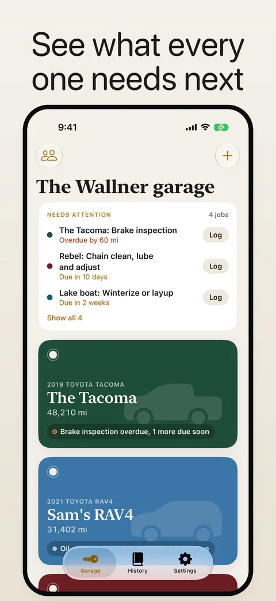
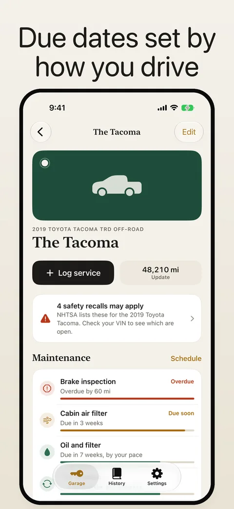
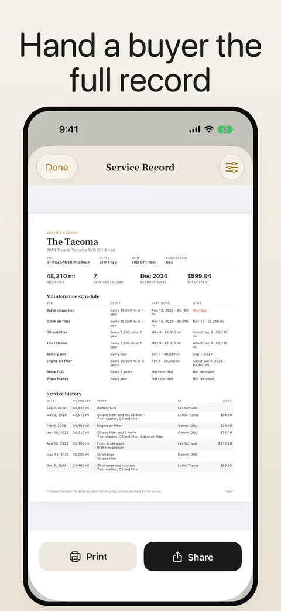
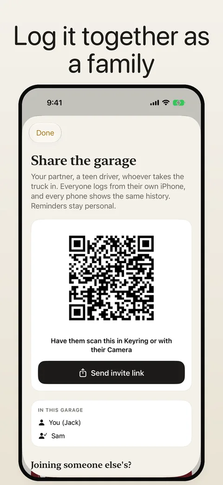
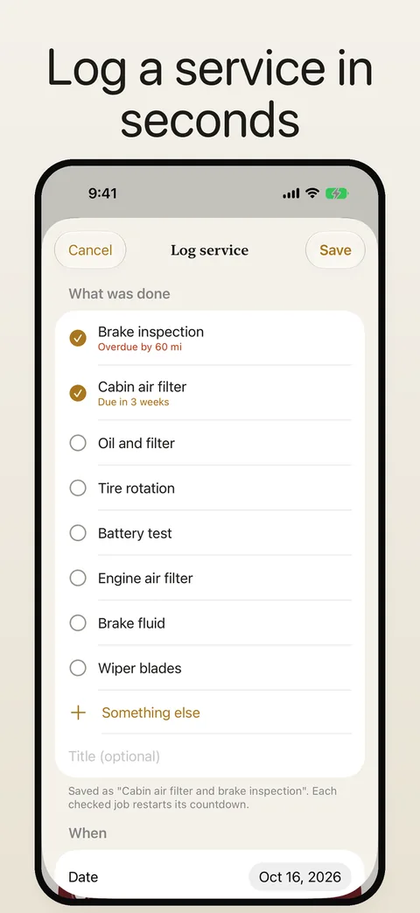

Every vehicle in the family,
looked after.
The truck, your partner's SUV, the teen's first car, the boat and the mower. Vehicle Maintenance Log is a shared service log app for all of them that tells you what is due next.
Download on the App StoreOil and filter · due in 3 weeks, by your pace





Which vehicles can it track?
Anything with a meter. Schedules for every kind of vehicle, in miles, kilometers or engine hours.
One garage, the whole family
Invite anyone with a link or a QR code. Everyone logs from their own iPhone and every phone shows the same history. Reminders stay personal.
Knows what is due
Recommended schedules for each kind of vehicle and powertrain, from hybrids to classics, counted down by date and by miles, kilometers or engine hours at the pace you actually drive. Storage pauses the boat's reminders, and a second meter tracks a generator beside the RV's miles.
Log in seconds, or bring your history
Tick what was done, add the mileage and cost, snap the receipt. Any field, from the plate and VIN to the odometer and notes, can be filled from a photo. Import a CSV from another app, or catch up on old receipts in a row.
Fill-ups and real mpg
Snap the odometer and the reading fills in. With Pro, snap the pump and the gallons, price, total and grade fill in. Fuel economy is worked out from full tank to full tank, in mpg or L/100 km.
A record worth handing over
Print or send a clean Service Record PDF with every job and receipt. When you sell, mark it sold and the history stays with you. Export to CSV any time.
Recalls, value and parts
Safety recalls from NHTSA, one tap to your country's price guide with the vehicle filled in, parts for the job due next, plus upgrades and owners clubs.
Is Vehicle Maintenance Log free?
Yes, for two vehicles. They are free for good, with unlimited logging, fill-ups and mpg, reminders, recalls, family sharing and CSV export. Pro, a monthly or yearly subscription with a one-week free trial or a one-time purchase, adds unlimited vehicles, the Service Record PDF, receipt and pump auto-fill and spending insights. No account, no ads.
Questions
What is the best app to track car maintenance for the whole family?
Vehicle Maintenance Log keeps one shared garage for every vehicle you own. Everyone you invite logs from their own iPhone, sees the same history, and gets their own reminders, with no account to create.
Can I track a boat, motorcycle or airplane, not just cars?
Yes. There are schedules for cars, trucks, SUVs, vans, motorcycles, scooters, motorhomes, campers, trailers, boats, sailboats, jet skis, aircraft, ATVs, snowmobiles, tractors and mowers. Boats, aircraft and small engines run on hours instead of miles.
How does the app know what maintenance is due?
Each vehicle starts with a recommended schedule for its kind and powertrain. Tell it when each job was last done and the app counts down by date and by mileage or hours, using how much you actually drive to estimate the date.
Can I print a service record when I sell my car?
Yes. The Service Record is a clean PDF with every job, the schedule and your receipts, ready to print or send to a buyer or shop. It is part of Pro.
Does the app show what my car is worth?
The app links straight to the price guides for your country, such as Kelley Blue Book, Edmunds and J.D. Power in the US (or Aircraft Bluebook for planes), with your vehicle filled in, and lets you note the value you found. It does not show third-party values as its own.
Does it check for recalls?
Yes. For cars, trucks and motorcycles the app checks NHTSA's public recall database for your year, make and model and notifies you when a new one is issued. Log the dealer fix and it is marked done for everyone in the garage, and it shows on the Service Record.
Does it track gas mileage?
Yes. Log each fill-up and the app works out your mpg, or L/100 km, from full tank to full tank. Snap the odometer and the reading fills in, and with Pro a photo of the pump fills in the gallons, price per gallon, total and grade, read on your iPhone. Fill-ups import from Fuelly-style CSVs.
Can I bring my history from another app?
Yes. Import a CSV export from Fuelly, Drivvo, Simply Auto, aCar or your own spreadsheet and the app matches the jobs to its schedule, so the countdowns start from your real history. Fill-ups come in as fill-ups, with your mpg. Old paper receipts can be logged one after another without leaving the form.
Does it work outside the US?
Yes. Distances can be in kilometers, the make list and value guides follow your region (for example Canadian Black Book and AutoTrader.ca in Canada, Auto Trader and Parkers in the UK), schedules add winter tires where they matter, and the inspection is named for your country, such as the MOT. US recalls come from NHTSA, with a link to your country's own recall lookup.
Is Vehicle Maintenance Log free?
Two vehicles are free for good, with unlimited logging, fill-ups and mpg, reminders, recalls, family sharing and CSV export. Pro adds unlimited vehicles, the Service Record PDF, receipt and pump auto-fill and spending insights. Prices are shown in the app before you buy and vary by region.
Do I need an account?
No. Your garage is stored on your iPhone and in your own iCloud, and sharing uses Apple's iCloud sharing.